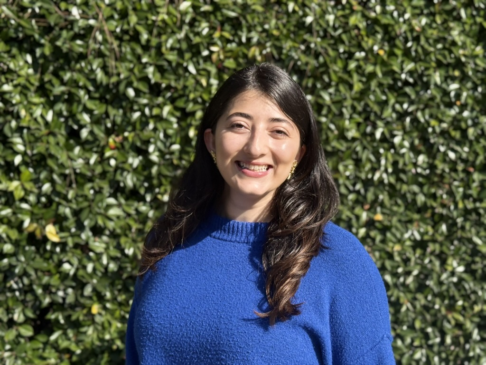

D. Sofía Granados
Political Science PhD Candidate, UCLA
I'm a Political Science PhD student at UCLA, with a B.A. in Economics and a B.A. in Political Science (minor in Development Studies) from Universidad de los Andes, Colombia. My research centers on political violence, armed conflict, and research ethics, alongside long-standing interests in migration, education, and gender — grounded in years of field experience designing and leading quantitative and qualitative data collection across Colombia and Latin America.
Research & Projects
-
Asking About Violence
Research Manager & Co-author. Co-led the design and field implementation of a large-scale (3,000+ participant) survey experiment on political violence, mental health, and research ethics, with Graeme Blair (UCLA), Lauren E. Young (UC Davis), and Rebecca Littman (UIC).
-
The Impact of Temporary Working and Residence Permits for Migrants in Colombia
Designed and led field data collection to study how temporary legal status affects the economic and social outcomes of migrants in Colombia. (Innovations for Poverty Action)
-
Youth Music and Entrepreneurship Training to Stimulate Career Development in Colombia
Supported the design, implementation, and monitoring of a program evaluation combining music education and entrepreneurship training for at-risk youth. (Innovations for Poverty Action)
-
ConsultIPA
Co-designed and helped launch a pro-bono Monitoring & Evaluation consultancy initiative for small organizations in Colombia.